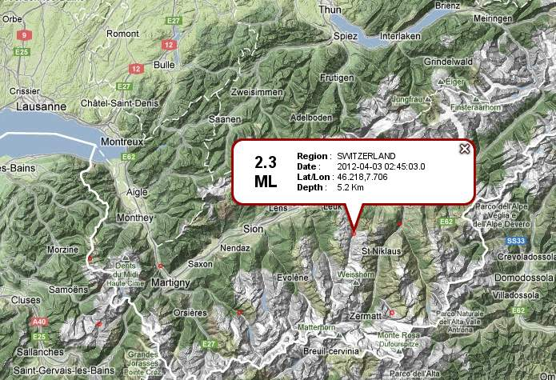
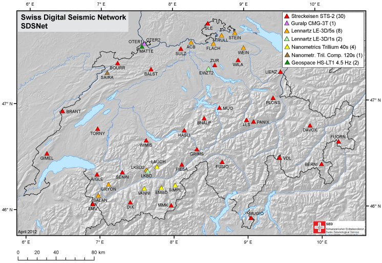

Advanced Exercise¶
This practical intends to demonstrate how ObsPy can be used to develop workflows for data processing and analysis that have a short, easy to read and extensible source code. The overall task is to automatically estimate local magnitudes of earthquakes using data of the SED network. We will start with simple programs with manually specified, hard-coded values and build on them step by step to make the program more flexible and dynamic. Some details in the magnitude estimation should be done a little bit different technically but we rather want to focus on the general workflow here.
 {kind=link}
1. Request Earthquake Information from EMSC/NERIES/NERA¶
Fetch a list of events from EMSC for the region of Valais/SW-Switzerland on 3rd
April of 2012. Use the Client provided in obspy.clients.fdsn. Note down the
catalog origin times, epicenters and magnitudes.
2. Estimate Local Magnitude¶
- Use the file LKBD_WA_CUT.MSEED
to read MiniSEED waveform data of the larger earthquake. These data have
already been simulated to (demeaned) displacement on a Wood-Anderson
seismometer (in meter) and trimmed to the right time span. Compute the
absolute maximum for both North and East component and use the larger value
as the zero-to-peak amplitude estimate. Estimate the local magnitude
\(M_\text{lh}\) used at the Swiss Seismological Service (SED) using a epicentral distance of
\(d_\text{epi}=20\) (km), \(a=0.018\) and \(b=2.17\) with the
following formula (mathematical functions are available in Python’s
mathmodule):
- Calculate the epicentral distance from the station coordinates (46.387°N,
7.627°E) and catalog epicenter fetched above (46.218°N, 7.706°E). Some useful
routines for such tasks are included in
obspy.core.util.geodetics.
3. Seismometer Correction/Simulation¶
Modify the existing code and use the file LKBD.MSEED to read the original MiniSEED waveform data in counts. Set up two dictionaries containing the response information of both the original instrument (a LE3D-5s) and the Wood-Anderson seismometer in poles-and-zeros formulation. Please note that for historic reasons the naming of keys differs from the usual naming. Each PAZ dictionary needs to contain sensitivity (overall sensitivity of seismometer/digitizer combination), gain (A0 / normalization factor), poles and zeros. Check that the value of water_level is not too high, to avoid overamplified low frequency noise at short-period stations. After the instrument simulation, trim the waveform to a shorter time window around the origin time (2012-04-03T02:45:03) and calculate \(M_\text{lh}\) like before. Use the following values for the PAZ dictionaries:
– LE3D-5s Wood-Anderson poles -0.885+0.887j -0.885-0.887j -0.427+0j -6.2832-4.7124j -6.2832+4.7124j zeros 0j, 0j, 0j 0j gain 1.009 1 sensitivity 167364000.0 2800 Instead of the hard-coded values, read the response information from a locally stored dataless SEED LKBD.dataless. Use the Parser of module
obspy.xseedto extract the poles-and-zeros information of the used channel.We can also request the response information from WebDC using the ArcLink protocol. Use the Client provided in
obspy.arclinkmodule (specify e.g. user=”sed-workshop@obspy.org”).
4. Fetch Waveform Data from WebDC¶
- Modify the existing code and fetch waveform data around the origin time given
above for station LKBD (network CH) via ArcLink from WebDC using
obspy.arclink. Use a wildcarded channel=”EH*” to fetch all three
components. Use keyword argument metadata=True to fetch response information
and station coordinates along with the waveform. The PAZ and coordinate
information will get attached to the
Statsobject of all traces in the returned Stream object during the waveform request automatically. During instrument simulation use keyword argument paz_remove=’self’ to use every trace’s attached PAZ information fetched from WebDC. Calculate \(M_\text{lh}\) like before. - Use a list of station names (e.g. LKBD, SIMPL, DIX) and perform the
magnitude estimation in a loop for each station. Use a wildcarded
channel=”[EH]H*” to fetch the respective streams for both short-period and
broadband stations. Compile a list of all station magnitudes and compute the
network magnitude as its median (available in
numpymodule). - Extend the network magnitude estimate by using all available stations in network CH. Get a list of stations using the ArcLink client and loop over this list. Use a wildcarded channel=”[EH]H[ZNE]”, check if there are three traces in the returned stream and skip to next station otherwise (some stations have inconsistent component codes). Put a try/except around the waveform request and skip to the next station and avoid interruption of the routine in case no data can be retrieved and an Exception gets raised. Also add an if/else and use \(a=0.0038\) and \(b=3.02\) in station magnitude calculation for epicentral distances of more than 60 kilometers.
5. Construct Fully Automatic Event Detection, Magnitude Estimation¶
In this additional advanced exercise we can enhance the routine to be independent of a-priori known origin times by using a coincidence network trigger for event detection.
- fetch a few hours of Z component data for 6 stations in Valais / SW-Switzerland
- run a coincidence trigger like shown in the Trigger Tutorial
- loop over detected network triggers, store the coordinates of the closest station as the epicenter
- loop over triggers, use the trigger time to select the time window and use the network magnitude estimation code like before